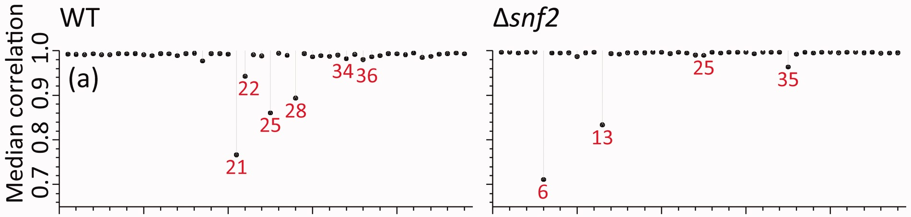
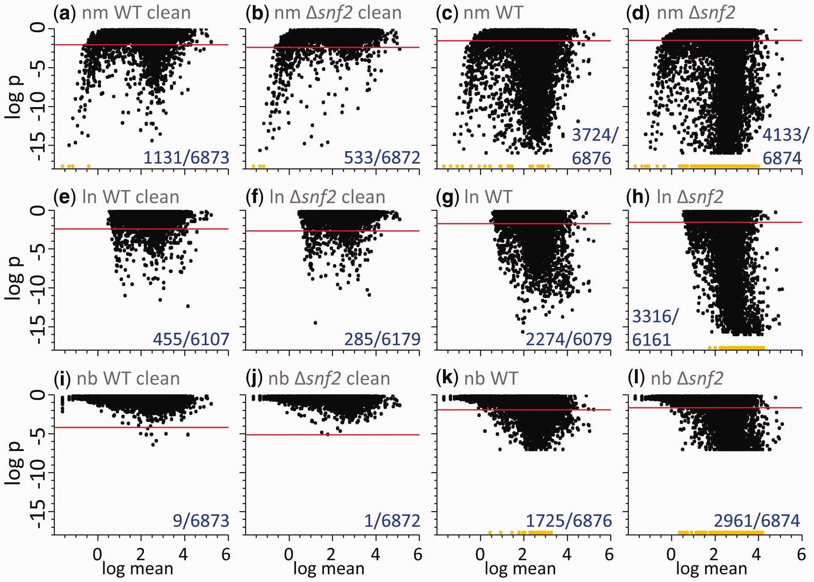
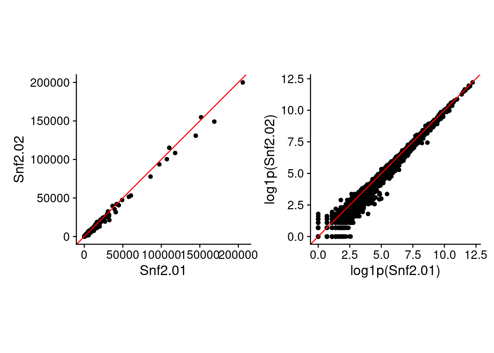
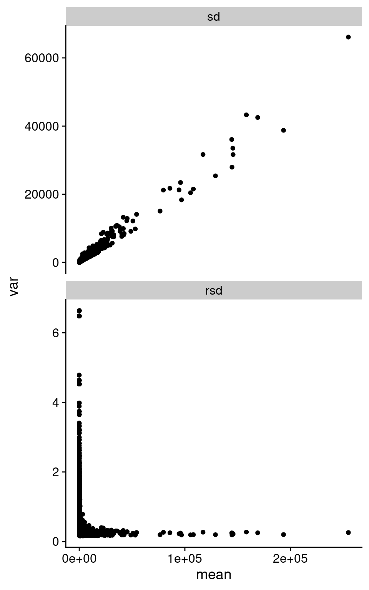

![]()

Background
I’ve been working on a manuscript for our newish correlation method, information-content-informed Kendall-tau (ICI-Kendalltau, package currently at (Flight and Moseley 2021)). As part of that manuscript, we wanted to highlight how well the correlation measure detects outlier samples. Two datasets we are using for that aspect are public, one from The Cancer Genome Atlas and the other from the Barton group. The Barton group and collaborators produced a highly replicated RNAseq yeast dataset, 48 replicates in two conditions, and have used it in various analyses (Gierliński et al. 2015; Schurch et al. 2016).
So What
For my manuscript, ideally I want to be able to comment on the outliers found in one of the Barton group manuscripts (Gierliński et al. 2015). To do that, I need access to one of:
- the sample-sample correlations themselves,
- the counts from each sample
- or be able to recreate counts from each sample.
Several years ago I was asking about this dataset on twitter when I was using it for another project, because the project ID in the SRA didn’t have a mapping to condition. Dr. Geoff Barton pointed me to a metadata file available on figshare (Barton, Blaxter, Cole, Gharbi, Gierliński, Owen-Hughes, et al. 2015). This allowed me to generate read counts across biological replicates (which is what I was interested in at the time). However, if I had poked around the figshare project a bit more, I would have likely seen both of the files with read counts for each replicate already available (Barton, Blaxter, Cole, Gharbi, Gierliński, Schofield, et al. 2015a, 2015b). It really sucks that I hadn’t noticed these other files years ago, it would have saved me the effort in remapping and generating gene counts myself, as well as getting really weird correlation values compared to (Gierliński et al. 2015).
My Correlations
From the demultiplexed read data and the metadata file I found several years ago, I had run RNA-seq mapping software to generate read counts for each sample in each lane, and summed them across lanes. I know how to do these kinds of things, even though I will be the first to admit it is not my personal bread and butter analysis (I normally get involved after count generation). With the (few) hints from the manuscript about how (Gierliński et al. 2015) did the correlation calculation (see more below), I don’t get anything close to the range of median correlation values within each class of samples. Which I thought was very, very weird. I implemented a variety of transformation methods and inclusion of missing values for my correlation calculations:
- logged values (log and log1p)
- raw values
- removal and inclusion of missing (0) values
Even with all of these variations, I could not come close to the same values I found presented in their manuscript. Here, in panel (a) of Figure 2 from (Gierliński et al. 2015), the median correlations range from 0.7 to 1.
My ranges, however, were much different.
library(dplyr)
out_ranges = readRDS(here::here("data_files", "ranges.rds"))
knitr::kable(out_ranges$rmf_ranges, digits = 2, caption = 'RMF median correlation ranges. Which is "which" method was used to calculate the correlations.')| which | sample_class | high | low |
|---|---|---|---|
| log | SNF2 | 0.99 | 0.96 |
| log | WT | 0.97 | 0.89 |
| log_no0 | SNF2 | 0.99 | 0.95 |
| log_no0 | WT | 0.96 | 0.87 |
| raw | SNF2 | 0.98 | 0.96 |
| raw | WT | 0.97 | 0.67 |
| raw_no0 | SNF2 | 0.98 | 0.96 |
| raw_no0 | WT | 0.97 | 0.67 |
We can see in this table, that my median correlation ranges are not even close to what we can see in the figure.
And the lowest values and samples didn’t seem to be right either.
out_ranges$rmf_medians %>%
dplyr::filter(which %in% "raw_no0") %>%
dplyr::group_by(sample_class) %>%
dplyr::arrange(med_cor) %>%
dplyr::slice_head(n = 6) %>%
knitr::kable(., digits = 2, caption = "Lowest median correlation values using my own counts.")| sample_id | med_cor | sample_class | which |
|---|---|---|---|
| SNF2.7 | 0.96 | SNF2 | raw_no0 |
| SNF2.33 | 0.96 | SNF2 | raw_no0 |
| SNF2.27 | 0.96 | SNF2 | raw_no0 |
| SNF2.8 | 0.96 | SNF2 | raw_no0 |
| SNF2.48 | 0.96 | SNF2 | raw_no0 |
| SNF2.23 | 0.97 | SNF2 | raw_no0 |
| WT.32 | 0.67 | WT | raw_no0 |
| WT.14 | 0.75 | WT | raw_no0 |
| WT.11 | 0.80 | WT | raw_no0 |
| WT.13 | 0.83 | WT | raw_no0 |
| WT.16 | 0.87 | WT | raw_no0 |
| WT.12 | 0.91 | WT | raw_no0 |
Finding the Data
Finally, during the week of 2021-11-25, I happened across another manuscript on this dataset from 2016 (Schurch et al. 2016), that mentions a GitHub repo that lo and behold had copies of the preprocessed data to the level of gene counts per biological replicate (Cole et al. 2015). Awesome!
New Correlation
Using that preprocessed data, I was finally able to get what amounted to identical values of correlation, based on comparing the lowest correlation values with the figure. Great.
knitr::kable(out_ranges$barton, digits = 2, caption = 'Barton median correlation ranges. Which is "which" method was used to calculate the correlations.')| which | sample_class | high | low |
|---|---|---|---|
| log | Snf2 | 0.99 | 0.95 |
| log | WT | 0.99 | 0.97 |
| log_no0 | Snf2 | 0.99 | 0.91 |
| log_no0 | WT | 0.99 | 0.94 |
| raw | Snf2 | 1.00 | 0.71 |
| raw | WT | 0.99 | 0.77 |
| raw_no0 | Snf2 | 1.00 | 0.71 |
| raw_no0 | WT | 0.99 | 0.77 |
In this table, for the raw correlations, we finally see median correlation ranges that match what is observed in the figure, especially at the low end. Importantly, the Snf2 lowest value is lower than the WT lowest value. So I’m pretty sure I’m getting the correct sample-sample correlations now.
As well, if I look at the lowest sample - sample correlations in each class, the sample IDs match what is in the figure as well, and so do the median sample-sample correlations for those samples!
out_ranges$barton_medians %>%
dplyr::filter(which %in% "raw_no0") %>%
dplyr::group_by(sample_class) %>%
dplyr::arrange(med_cor) %>%
dplyr::slice_head(n = 6) %>%
knitr::kable(., digits = 2, caption = "Lowest median correlation values using Barton counts.")| sample_id | med_cor | sample_class | which |
|---|---|---|---|
| Snf2.06 | 0.71 | Snf2 | raw_no0 |
| Snf2.13 | 0.83 | Snf2 | raw_no0 |
| Snf2.35 | 0.96 | Snf2 | raw_no0 |
| Snf2.10 | 0.99 | Snf2 | raw_no0 |
| Snf2.25 | 0.99 | Snf2 | raw_no0 |
| Snf2.24 | 0.99 | Snf2 | raw_no0 |
| WT.21 | 0.77 | WT | raw_no0 |
| WT.25 | 0.86 | WT | raw_no0 |
| WT.28 | 0.89 | WT | raw_no0 |
| WT.22 | 0.94 | WT | raw_no0 |
| WT.17 | 0.98 | WT | raw_no0 |
| WT.36 | 0.98 | WT | raw_no0 |
Why No Log-Transformation?
One interesting thing about having the correct correlations is discovering that Gierlinski et al didn’t use log-transformed data in their Pearson correlation calculations. This seems unusual to me. All my career in -omics, the one thing I’ve had drilled into me is that doing a linear correlation on data that has proportional error component or variance is a very bad idea. Proportional error or variance means the variance increases with increasing mean values, which is definitely true of these count data.
If I had to guess why log-transformed values weren’t used, I think it is because of the analysis in the replicate paper about how well the un-transformed values fit a normal distribution vs a log-normal distribution. That figure and caption are provided here for reference.

Just so you can see the difference using raw and log-space makes (besides the values in the above table), here are two of the replicate samples plotted against each other in raw and log-transformed values.
library(patchwork)
library(ggplot2)
theme_set(cowplot::theme_cowplot())
raw_plot = readRDS(here::here("data_files", "raw_plot.rds"))
raw_p2 = raw_plot +
coord_equal() +
geom_abline(slope = 1, color = "red")
log_plot = readRDS(here::here("data_files", "log_plot.rds"))
log_p2 = log_plot +
coord_equal() +
geom_abline(slope = 1, color = "red")
raw_p2 + log_p2
We can summarize this behavior across all the replicate samples, looking at standard deviation (SD) and relative standard deviation (RSD, SD / mean). I took the counts from Barton group after removing outliers based on median correlations, and then calculate the mean, SD, and RSD across all replicates in each of Snf2 and WT.
data_summary = readRDS(here::here("data_files", "summary.rds"))
data_summary %>%
dplyr::filter(!(type %in% "diff")) %>%
ggplot(aes(x = mean, y = var)) +
geom_point() +
facet_wrap(~ type, ncol = 1, scales = "free_y")Warning: Removed 494 rows containing missing values (`geom_point()`).
As we can see in the above figure, SD increases with increasing mean. Which is basically what we observe in the pairwise plot above. I’m pretty sure I’ve been taught not to do Pearson correlation on data with this structure. Interestingly, the RSD does become rather constant after a certain value in mean expression.
How Did I Miss the Original Data?
Back to the question of finding the original data, it turns out I just didn’t look hard enough at the first place that Geoff Barton sent me to. When I started poking around the figshare repo’s from Geoff and others in the group and following links, it was easy to find a copy of the preprocessed data from each condition.
Why Was it So Hard to Reproduce Values?
Another interesting thing about this endeavor was just how hard it was to reproduce the correlations. (Gierliński et al. 2015) was actually light on details of how the data was processed, and how the correlation was done. For example, the manuscript just says “Pearson correlation”, with basically no other details. Were raw counts used or log-transformed? Were missing (count of 0) values in either sample removed prior to correlation? It was only when I finally happened across the GitHub repo that I finally got the answers I really needed. And for some reason, that manuscript doesn’t mention the GitHub repo, or the data available on figshare. This points to the importance of citing and linking all the resources for a manuscript (or even a blog post!). And I’m not trying to knock on Marek, or Geoff, or Nick on this. In my experience, they post open things, and provide lots of data. But this highlights just how hard it becomes to recreate something if even a little piece of the data is missing.
Data Files and Scripts
The rds files and a processing script to calculate the correlations and generate the plots are all available on the blog directory on GitHub (Flight 2022).
References
Barton, Geoffrey, Mark Blaxter, Christian Cole, Karim Gharbi, Marek Gierliński, Tom Owen-Hughes, Pieta Schofield, et al. 2015. “Metadata for a highly replicated two-condition yeast RNAseq experiment.” July. https://doi.org/10.6084/m9.figshare.1416210.v3.
Barton, Geoffrey, Mark Blaxter, Christian Cole, Karim Gharbi, Marek Gierliński, Pieta Schofield, Nick Schurch, Vijender Singh, and Nicola Wrobel. 2015a. “SNF2 knock-out yeast gene read counts from a 48 replicate experiment,” May. https://doi.org/10.6084/m9.figshare.1425502.v1.
———. 2015b. “Wild-type yeast gene read counts from 48 replicate experiment,” May. https://doi.org/10.6084/m9.figshare.1425503.v1.
Cole, Chris, Nick Schurch, Rayna M Harris, and Marek Gierliński. 2015. “profDGE48.” https://github.com/bartongroup/profDGE48.
Flight, Robert M. 2022. “Post Files.” https://github.com/rmflight/researchBlog_distill/tree/main/_posts/2022-01-15-recreating-correlation-values-from-another-manuscript.
Flight, Robert M, and Hunter NB Moseley. 2021. “ICIKendallTau.” https://github.com/MoseleyBioinformaticsLab/ICIKendallTau.
Gierliński, Marek, Christian Cole, Pietà Schofield, Nicholas J. Schurch, Alexander Sherstnev, Vijender Singh, Nicola Wrobel, et al. 2015. “Statistical models for RNA-seq data derived from a two-condition 48-replicate experiment.” Bioinformatics 31 (22): 3625–30. https://doi.org/10.1093/bioinformatics/btv425.
Schurch, Nicholas J., Pietá Schofield, Marek Gierliński, Christian Cole, Alexander Sherstnev, Vijender Singh, Nicola Wrobel, et al. 2016. “How Many Biological Replicates Are Needed in an RNA-Seq Experiment and Which Differential Expression Tool Should You Use?” RNA 22 (6): 839–51. https://doi.org/10.1261/rna.053959.115.
Reuse
Citation
BibTeX citation:
@online{mflight2022,
author = {Robert M Flight},
title = {Recreating {Correlation} {Values} from {Another}
{Manuscript}},
date = {2022-01-15},
url = {https://rmflight.github.io/posts/2022-01-15-recreating-correlation-values-from-another-manuscript},
langid = {en}
}
For attribution, please cite this work as:
Robert M Flight. 2022. “Recreating Correlation Values from Another
Manuscript.” January 15, 2022. https://rmflight.github.io/posts/2022-01-15-recreating-correlation-values-from-another-manuscript.